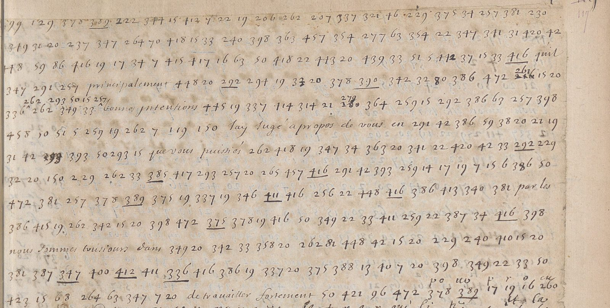

At a glanceKey from adjacent plaintext · 3,300 of 3,367 groups (98.0%)
- The mémoire
- Armand de Bourbon, prince de Conti, generalissimo of the Paris Fronde, to Geoffroy, marquis de Laigue, his envoy to Archduke Leopold Wilhelm: Paris, 5 March 1649, the day after the Rueil conference opened.
- Where
- Bibliothèque nationale de France, Français 3854 no. 43, ff. 117r–120r (Gallica btv1b52520094g). Catalogue item 26, with nos. 41–42.
- The cipher
- Numbers for letters and syllables: four interleaved alphabets, syllables in blocks of five, a stroke under a number reverses its syllable, numbers from about 99 to 250 are nulls.
- How it was deciphered
- A clerk wrote the plain text between the lines from the thirteenth line on. The key was rebuilt from about 3,300 of his glosses and applied to the twelve lines he left: 264 groups, the address and the purpose of the mémoire.
- What it says
- The conference with the court is only a way to buy time and corn for Paris; “dès le moment qu’il entrera en France, cette conférence se rompra”.
- Still open
- 67 groups whose gloss is faint, blotted or struck; ten syllable values in the opening fixed by sense alone.
Until 14 October 2026 this mémoire shared a page with Conti’s mémoires of 26 and 27 March 1649 (nos. 41–42). Those are in a letter cipher that George Lasry solved, a different cipher, with their own page.
01 The document
BnF Français 3854 is a recueil of Fronde papers from the prince de Conti’s side, January to April 1649. Omont lists no. 43 (ff. 117r–120r) as “Mémoire, avec chiffre et déchiffrement, du prince de Conti, pour un de ses envoyés auprès de l’archiduc”, undated. Its first words, once deciphered, name the envoy: Pour Monsieur de Legue, Geoffroy de Laigue. The last line of f. 120r is glossed à Paris le 5me mars 1649.

02 The code, and twelve lines without a gloss
The clerk who deciphered no. 43 wrote a letter or syllable above almost every number from f. 117r line 13 to the end of f. 120r. He wrote nothing over the first twelve lines. Those 264 groups carry the address and the purpose of the mémoire.
The key, rebuilt from his glosses. Number/gloss pairs were transcribed page by page (by model sub-agents), and the tallies (key43.txt) show a regular design:
- Four interleaved single-letter alphabets: 3–25 run a→z, 28–50 run z→a, 51–73 run a→z again, and about 80–98 run down.
- Syllables in blocks of five, in vowel order: ca ce ci co cu = 256–260, and so on through the consonants, with a second, homophonic series in the gaps.
- Underlining a number reverses its syllable: 385 = ra, underlined 385 = ar.
- Code words: 451 la Reyne, 457 le cardinal, 458 le parlement, 472 l’archiduc, 482 France. The 500s are dates.
- Nulls: the numbers from about 99 to 250, which are never glossed.
The opening, deciphered. Of the 264 groups, 220 take the value the same number has in the glosses; 24 follow from the alphabets or are nulls; 20 are syllables of the second series, fixed from context. The first draft was checked against the rest of the mémoire. Nine of the context and structural values were later found glossed on ff. 117r–120r, all as predicted: 279 de, 364 la, 354 ne (underlined, en), 443 te, 445 su, 37 o, 43 h, 86 n, and 36 p. None was contradicted.
Pour Monsieur de Legue. Parce que nous ne doutons que le cardinal ne donne une mauvaise interprétation à toutes ses actions, et qu’il ne face principalement ses efforts pour mettre l’archiduc dans la défiance de nos bonnes intentions sur le sujet de la conférence que [le] parlement a accordée, j’ay jugé à propos de vous en faire instruire, afin que vous puissiés destourner les mauvais effets des artifices du cardinal, et faire comprendre à l’archiduc que ce pourparler n’a esté causé et résolu que par les retardemens que l’archiduc apporte à nous secourir, et que nous sommes tousiours dans nos mesmes desseins … No. 43, f. 117r, lines 1–12, not glossed by the clerk; deciphered here
Measured. Counting the opening with these values and the body with the clerk’s glosses, the mémoire has 3,367 code groups: 3,300 have a value or are nulls (98.0%, 89 nulls). The 67 without a value are groups whose gloss cannot be read. The key passes the project’s statistical test against random and refitted keys on shuffled text.
03 What the mémoire says
Conti writes to Laigue, who is with Archduke Leopold Wilhelm, to keep the Spanish alliance alive while the Frondeurs negotiate with Mazarin’s side.
- Why the conference happened. The parlement laid the Archduke’s envoy’s proposals (dom Joseph) before the Queen. Mazarin, who saw that real peace would ruin him, proposed a conference to drag things out and to make the Archduke believe the Frondeurs were giving way. “À quoy l’on a employé Vautorte.” Conti would have refused it if the Archduke’s help had been ready and Paris not starving.
- What it bought. No suspension of arms. Saint-Germain lets in a hundred muids of corn a day from Corbeil for as long as the conference lasts, which buys time, “mais fort peu, en vous attendant”.
- Why it cannot succeed. The deputies are “tous gens de bien, dans le zèle de la paix générale et dans une haine irréconciliable pour le ministériat du cardinal”. They cannot give way on Mazarin, whom the parlement has condemned. The generals stayed away on purpose, so as to be free to break the talks at will.
- The promise. “Dès le moment qu’il entrera en France, cette conférence se rompra”, and a truer one will be opened with the Archduke’s own deputies.
- The plea. “Il n’y a plus un seul moment à perdre pour nous secourir.” Laigue is to press for help with all the Archduke’s forces.
The complete edited text of the mémoire is in targets/laigue1649/READING43.md. The Peace of Rueil was signed six days later, on 11 March; Conti’s mémoires of 26–27 March, on their own page, show the generals still pressing the Mazarin article after it.
04 What remains uncertain
- The opening. Ten of its context values (277, 314, 321, 358, 390, 398, 400, 407, 439, 442) never occur in the glossed text, so they rest on sense alone. None of them changes a sentence.
- Four short places in the glosses are faint, blotted or struck, and are left as gaps in the edition: f. 117v l. 18, f. 118v ll. 5–8, f. 119v l. 14 and f. 120r l. 0. The clerk wrote something at f. 119v l. 14 and struck it through, apparently “duc de Lorraine”.
05 Sources
- BnF Français 3854, no. 43, ff. 117r–120r. Gallica btv1b52520094g, canvases 245–251; description in BnF Archives et manuscrits.
- Code and data:
targets/laigue1649/: pairs and key inn43/, edition inREADING43.md, counts and validation pairs frommk_validation.py.
Notes: targets/laigue1649/ in the repository.